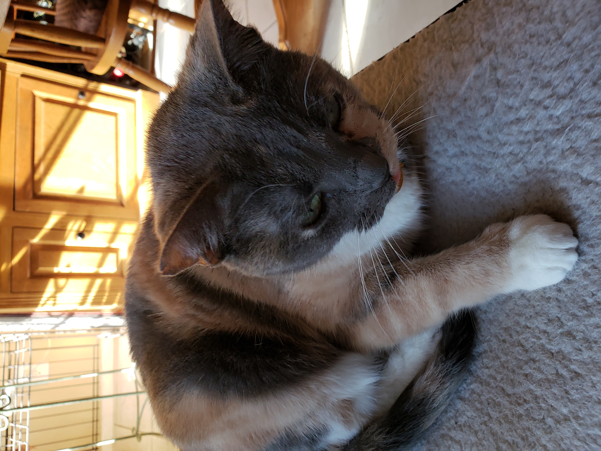
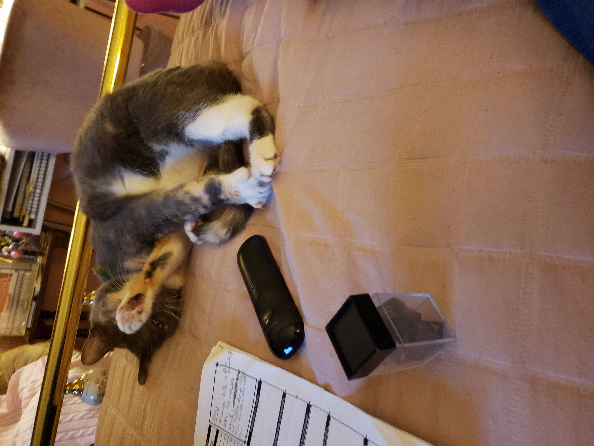

What is Kiku?
Kiku is an american domestic shorthair, or in less technical terms, a muttcat. Her mother was a mutt, and so is she. Though she is a very pretty mutt.
Who is Kiku?
She is a friend to all, except tuna and treats, which are her natural prey.